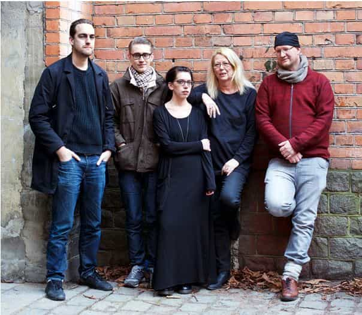

< < < Back
A Brief Introduction To The Country Formally Known As Sweden – Return Of Kings
I ask for your patience, dear reader. English is not my native tongue, and words that should flow like water might sometimes freeze to ice. However, my story is both important, and requested, so please hear my tale.
It is a daunting task to in a short article describe Sweden of today. To digest this tale, you must first change your outlook on reality. Think of President Obama as a conservative, think of Huffington Post as moderate, and think of the BBC as a newsagent known for its fearless pursuit of truth no matter what.
Imagine the laws of California as reactionary right wing and the immigration policy of the United States as racist and criminal. Your average Tumblr feminist is a mainstream Swedish politician, your Guantanamo Bay inmate is a Swedish diversity official. This is how far the rabbit hole goes.
The infestation of feminist politics
Sweden has officially adopted feminism as a core value for her policies. This is not a matter of opinion, but rather the clearly expressed politics of the current government. The green party does not have a leader or a representative, but rather two Mouthpieces. Yes, Mouthpiece is their official title.
One of them, Åsa Romson, now also the vice Prime Minister of Sweden, made a speech in 2014 where she opened with the words Ramadan Karim and continued to explain that:
It is still the case in Sweden in 2014 that all major positions of power and money are led by men. If we have a norm that it is white heterosexual men in power you also build a society that is best for white, heterosexual males. But it is so wrong, for most of us here are not white, heterosexual, middle-aged men.
…
We in the Green Party question what says that the Swedish man’s right to eat meat will go before the Sudanese woman’s right not to have their crop destroyed by climate change. We must dare to question the norms.
Vice Prime Minister Åsa Romson, agitating for a Brave New World
Although the new government has adopted feminism as the guiding ideology for policy making, it has long been present in many decisions. An old and still ongoing debate about how to deal with Swedish men that pay for sex illustrated this clearly.
Beatrice Ask, member of Moderaterna, the “conservative” party, and former Minister of Justice, wanted to send purple envelopes to all men suspected of buying sex. The expressed purpose was demonizing all men suspected of being a John. Her suggestion was stopped on the basis that it was against Swedish law to stigmatize men that hadn’t been found guilty in a court of law.
Finally, I would like to highlight a recent suggestion that the state should be able to fine or dissolve companies that didn’t have at least 40% women on the board of directors. The direct quote from minister of Justice Morgan Johansson was to “dissolve companies that don’t use gender quotas.” He later backed off from this statement in a Twitter comment, and the official line is now that “heavy fines” should be used instead. The law may be passed as early as next year.
Peaceful feminism?
Contrary to its stated aims, feminism does not limit violence. The recent legal suggestion from feminist Sweden clearly indicate the opposite, as returning fighters from the Islamic State will get extra benefits from the Swedish state.
These benefits include being offered employment before others, free gender education, and rental apartments in Stockholm, paid by tax funds. Raping a child after you killed her parents and then selling her off as a sex slave is apparently a lesser crime then not employing women based only on the fact that they are women. In a feminist society, it pays to be a thug.
Rape statistics also show that Sweden is one of the most unsafe countries in the Western world for women. Although these stats can be debated, an increase in gang rapes does coincide with the creation of the liberal, multicultural feminist state.
Female genital mutilation is a fairly new occurrence in Sweden. School nurses reported last year that all 30 girls in a class in Norrköping had been genitally mutilated. Although this has not led to a debate on women’s rights, Sara Johnsdotter, a social anthropologist from the university of Malmö, argues that the word itself is stigmatizes women and should be exchanged to the more including “circumcision”.
Sara Johnsdotter also claims that removing the clitoris does not have a negative effect for the sexual pleasures of women, since she has discovered something she calls “phantom orgasms.” I am not familiar with what studies Johnsdotter used to come to this conclusion, but it is proven that she has not herself undergone any form of circumcision.
Sara Johnsdotter, possibly having a phantom orgasm.
“The good hate”
Violence is rising as a whole in Sweden, and recent statements from law enforcement agencies indicate 55 no-go zones. This means areas where the police say that they no longer control the situation. Police patrols, fire brigade, and ambulances are routinely attacked in these areas with stones and fire bombs.
“Fascists” are routinely targeted with violence. The Swedish Democrats that according to the latest polls have between 15 and 20% of the votes are one example. Issa Issa was an active member of that party but left politics after being attacked in his home by a mob that stabbed him 18 times and left him to die. Despite the fact that Issa Issa is of Assyrian origin, this was not labeled a hate crime and despite the fact that the attackers yelled “fucking Christian,” it was not considered religiously motivated.
Organized violence against “fascists” includes being targeted by the organized lefties. A research group that calls itself “the Swedish Stasi” have created lists of people with “fascist views” and recently hacked Disqus, giving them access to anonymous commentators on sites deemed as “hate sites.”
Research Gruppen, “The Swedish Stasi”, lined up against a wall.
If you look for parasites you tend to find a corpse
I could keep listing incidents ad nauseam, but this should give you a general idea of Swedish mainstream policies. The image I hope to paint is not that of a changing, or even failing state, but that of an already dead society. If you get the image of a struggling people making a last stand against an oppressive elite, I have failed as a writer. Study it, observe it, for it is your future should you choose the same path as Sweden.
The decay has reached too deep and the vast majority of Swedes live from pay-check to pay-check, killing time in between with Netflix and Facebook. Few dare to tear down the veil and see the world for what it is.
I know, because for many years I was one of them. The corruption and degeneration on a personal level is worthy its own article, but it is of course the failing of men that doom society, and not the other way around.
Read More: Freedom Of Speech Is Dying In Sweden


{kind=link}
{kind=link}
{kind=link}
{kind=link}